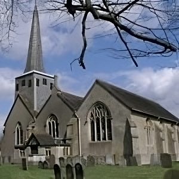

Act 2
Whilst the Horley Central Players were putting down their roots during the 1940s, another Dramatic Group was germinating. Walter Treagus, the verger at St Bartholomew’s parish church, persuaded various members of the Sundays Schools, Choir and Youth Fellowship to form an Operatic and Drama Club. 
They became known as the St Bart’s Players. Their first production – with music – was Rob of the Forest, presented in 1951 at the Empire Hall, off Victoria Road near the Brighton Road.
They were probably unaware that this hall stands adjacent to the site of where the village Pest House was built about 400 years earlier! Following this production, several other plays and another operetta were performed, and in 1952 came their first pantomime, Babes in the Wood, put on at the Constitutional Club Hall.
From this started the tradition of an annual pantomime, which Barts produced until the two companies merged in 1987.
Meanwhile, the lease on the railway arches held by the Community Association from British Rail was coming to an end, and they did not want to renew it. In 1956 it seemed that the Central Players would become homeless, and other possible sites were sought.
Appeals for a building fund were started, and an old wooden barn in Massetts Road was looked upon as a possible building for conversion. Perhaps it was the publicity surrounding the possible demise of the Company which helped, but negotiations for the Company to take over five of the arches lead to a lease being offered, for 21 years. After a short break, the arches were converted to permanent theatre use by the Central Players.
The arches were redecorated, and 80 seats from the old Gaiety Theatre in London were purchased, though the theatre only had 65 seats.
In October 1956 the local newspaper headlines were “Archway Theatre opens with the production of Ibsen’s ‘Hedda Gabler’”.
At this time, in order to be given a lease, the Central players became a registered Limited Company. It is not a Company with shareholders, but a Company guaranteed by members.
It may surprise some of the present Company members to learn that if the Theatre went bankrupt, each member would be personally liable for £1 of the debts! It also became a Registered Charity, for artistic and educational purposes, which has certain tax advantages. But since the operation of a Bar for members was considered essential for income as well as for social reasons, there was a small problem.
At the time, the Charity Commissioners said that running a Bar could not be one of the objects of a Charity. This led to the Theatre Club, formed in 1952 when the Company first put on plays in the Arches, formally taking over the running of the Bar, and each year the Club has given its profits as a donation to the Theatre Company.
The Company Members are honorary members of the Club. Although the Club is separate from the Company, its rules state that its Chairman and Treasurer shall be the same people as those of the Company. Separate yet interdependent.
Just before this, however, the Central Players had invited the St Bart’s Players to join them in a joint production of a large cast production of Peer Gynt in March 1955.
It is interesting to note that the two people whose vision had led to the Company using the arches, Arthur Clermont and John Dilley, were Stage Director and Designer for this production, which was produced by Jonathan Field. A friendly rivalry developed between the Companies (though a number of people were members of both). Early in 1957 the Horley Central Players invited the Barts Players to put on their plays in the Archway Theatre. Their first production in the Theatre was The Winslow Boy.
Written by Bette Bunkell – 2002